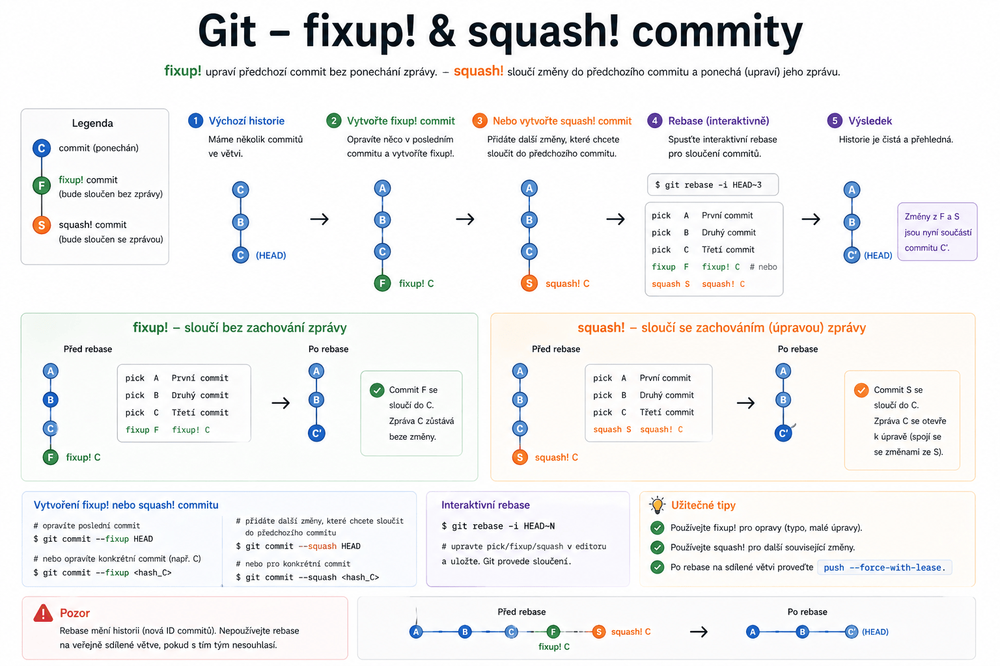

Git – fixup! a squash! commity
Praktické rady, jak efektivně opravovat a slučovat commity pomocí
fixup!asquash!v Gitu.

Co znamená fixup! a squash!?
fixup!– vytvoří commit, který opravuje předchozí commit bez změny jeho zprávy.squash!– vytvoří commit, který sloučí zprávu s původním commitem.
Postup krok za krokem
Krok 1: Vytvoření opravného commitu
Použití
fixup!:git commit --fixup <hashId>
nebo
bash git commit -m "fixup! <hashId> notUsedMessage"
Poznámka
<hashId> je ID commitu, který chcete opravit.
Použití
squash!:git commit -m "squash! <hashId> optionalCustomMessage"
Tip
squash! umožňuje přidat vlastní zprávu ke sloučení.
Krok 2: Rebase s automatickým sloučením
git rebase -i --autosquash HEAD~<n>
- Spustí interaktivní rebase s automatickým zařazením
fixup!asquash!commitů.
Poznámka
<n> je počet posledních commitů, které chcete upravit.
Krok 3: Úprava v editoru
- Otevře se textový editor s přehledem commitů.
- Proveďte potřebné změny, uložte soubor a zavřete editor.
Tip
Po zavření editoru se rebase automaticky dokončí a opravy/sloučení se aplikují.